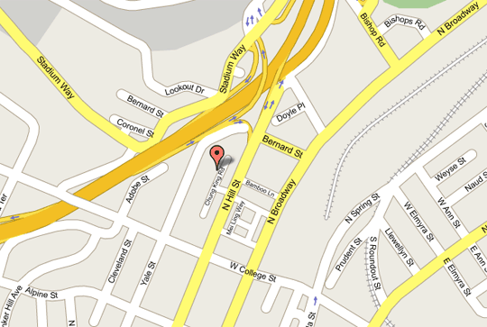

TELIC ARTS EXCHANGE, located on Chung King Road in Chinatown, Los Angeles, provides a place for multiple publics to engage with contemporary forms of media, art and architecture. For four years the space has been a platform for exhibitions, performances, screenings, lectures and discussions. TELIC’s program emphasizes social exchange, interactivity and public participation to produce a critical engagement with new media and culture.
TELIC ARTS EXCHANGE is a non-profit, 501(c)(3) organization.
Executive Director: Fiona Whitton
Curatorial Director: Sean Dockray
Exhibitions Coordinator: Helen Cahng
BOARD OF DIRECTORS
Leslie Ito
Laurie McGahey
Cynthia Chou
Fiona Whitton
Sean Dockray
Mailing Address:
Telic Arts Exchange
818 North Hill Street
Suite 617
Los Angeles, CA 90012
213-344-6137
info (at) telic (dot) info
Gallery Hours:
Friday and Saturday, 12 to 6

Directions:
From the 110 Freeway (traveling either north or south) take the Hill St. Chinatown exit. From downtown drive north on Hill St. to Chung King Road, a pedestrian only street parallel to and just west of Hill St. You can park on Hill St. Enter through the plaza at the pedestrian crossing halfway between College and Bernard Streets. There is also a parking lot at each end of Chung King Rd. Driving in from Hill St. (take the first driveway on the right after the 110 exit - $4 / all day parking). The other parking structure is on Bernard Street between Hill St. and Broadway.
THANK YOU
TELIC would like to acknowledge the following people for their financial donations and contribution of volunteer time. We appreciate their support to help grow TELIC’s programs.
Mark Allen, Natalie Alton, S. E Barnet, Antonia Blocker, Benjamin Bratton, Jeremy Burgen, Brendan Burke, Heather Bursch, Helen Cahng, York Chang, Kevin B. Chen, Sharon Cheslow, Peter Cho, Cynthia Chou, Ed Coolidge, Deborah Cox, Denise Davis, Scott Davis, Sean Deyoe, Tracy Do, Sean Dockray, Adam Eeuwens, Xarene Eskandar, Mason Fong, Maroun Harb, Ryan Hattig, Peter Hearn, Micol Hebron, Amara Hopping, Hugo Hopping, Barbara Ito, Leslie Ito, Philip Ito, Tim Jaeger, Mike Kelly, Osman Khan, Ki Chul Kim, Steve Kim, Alice Ko, Harlan Lee, Karen Lee, Tom Leeser, Eric Lindley, Richard Liu, Marshal Lo, Shana Lutker, Rachel Mayeri, Laurie McGahey, John McGahey, Michael McGahey, Peter McGahey, Chandler McWilliams, Christian Moeller, Rebeca Mendez, Quyen Do Mullin, Hillary Mushkin, Sarah Paul Ocampo, Adam Overton, Anna Oxygen, Duc Pham, Diane Pham, Nancy Pham, Tamala Poljak, Amar Ravva, Cait Reas, Casey Reas, Eliot Rocket, Lilith Rocket, Alison Saar, Fernando Sanchez, Adam Shira, Pascual Sisto, Michael Smoler, Norma Soto, Courtney Stricklin, Robert Summers, Phil Taylor, Denise Vose, Angie Waller, Fiona Whitton, Steve Wong, Zoe Wong, Chi-wang Yang, Stephen Van Dyck, Jiacong Yan, Jenny Yang
TELIC has received support from the following foundations, corporations and government agencies:
The Andy Warhol Foundation for the Visual Arts, The Annenberg Foundation, CIM, The Good Son, The Lee Group, The Mondriaan Foundation, The New Belgium Brewing Company, PCL, The Peter Norton Family Foundation, Superior Sod, Trader Joes, Via Cafe and Waste Management.